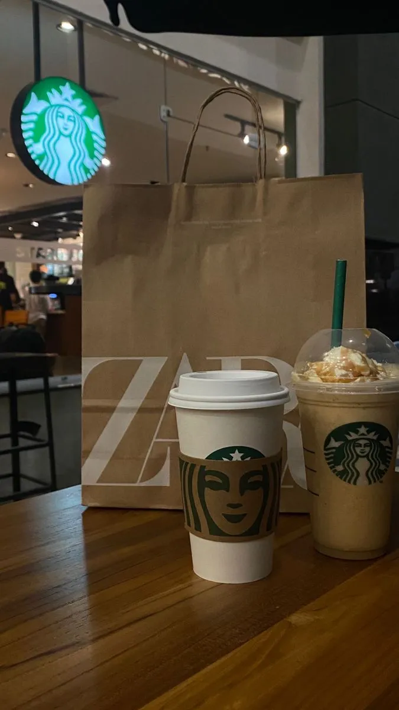

COFFEE ? CULTURE ? WORKSPACES
Discover some of Dubai's most popular cafes, specialty coffee destinations and work-friendly spaces across the city.
Dubai has developed one of the Middle East's most vibrant coffee scenes. From specialty coffee roasters to luxury caf? concepts and waterfront coffee spots, the city offers something for every coffee enthusiast.
Many of Dubai's best cafes are concentrated in:
? Downtown Dubai
? Dubai Marina
? Jumeirah
? Al Quoz
? Business Bay
? Palm Jumeirah
Dubai's specialty coffee movement continues to grow with independent roasters, artisan brewing methods and carefully sourced beans from around the world.
Visitors can find pour-over coffee, espresso bars, cold brew stations and modern caf? concepts throughout the city.
Many professionals and entrepreneurs use cafes as informal meeting spaces and remote working environments.
Popular features include:
? High-speed Wi-Fi
? Comfortable seating
? Quiet environments
? Meeting-friendly layouts
? Extended opening hours
Dubai Marina, Palm Jumeirah and Jumeirah Beach areas offer some of the city's most scenic coffee experiences with waterfront views and outdoor seating.
The city is also home to luxury cafes located inside premium hotels, lifestyle destinations and luxury retail districts.
These venues combine coffee culture with fine dining, design and hospitality.
Dubai's cooler months between October and April provide ideal conditions for outdoor caf? experiences.
Early mornings and evenings remain particularly popular among residents and visitors.
Dubai's caf? culture continues to evolve, blending global coffee trends with local hospitality and international influences. Whether you're looking for specialty coffee, a productive workspace or a relaxing waterfront setting, Dubai offers countless caf? experiences worth exploring.